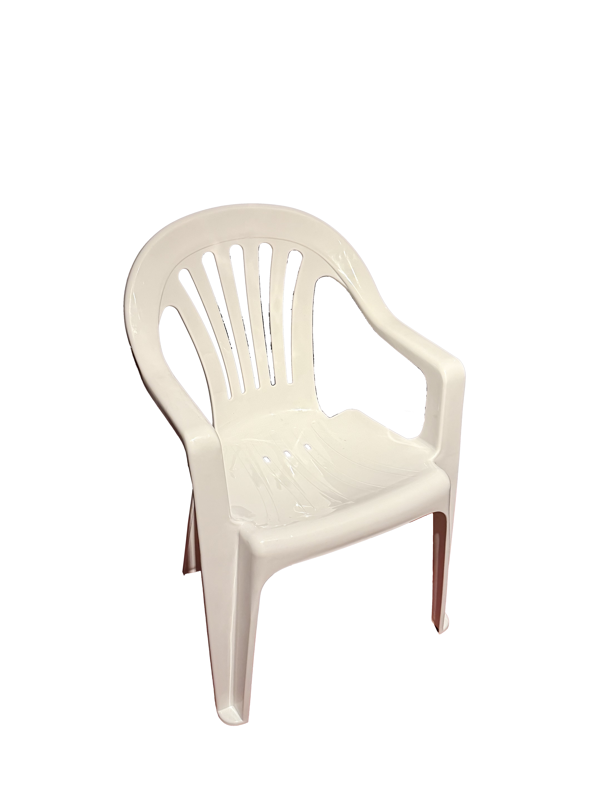
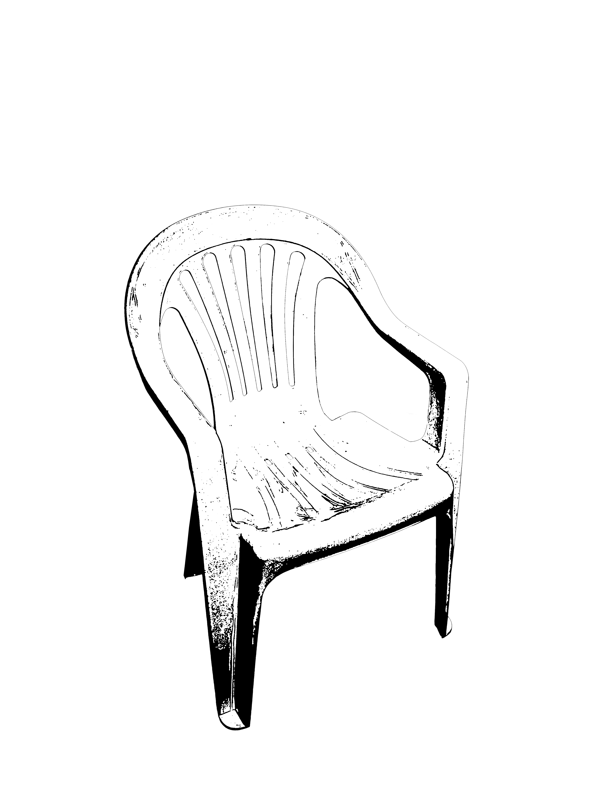
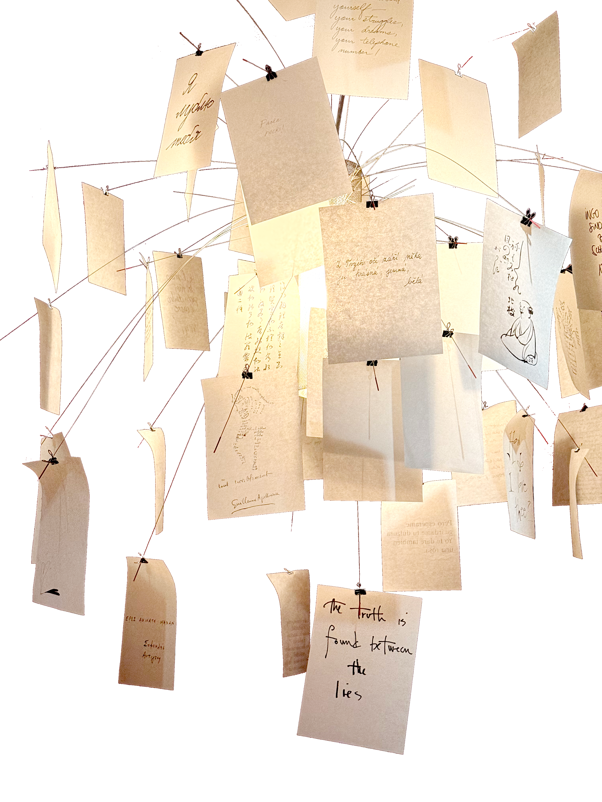
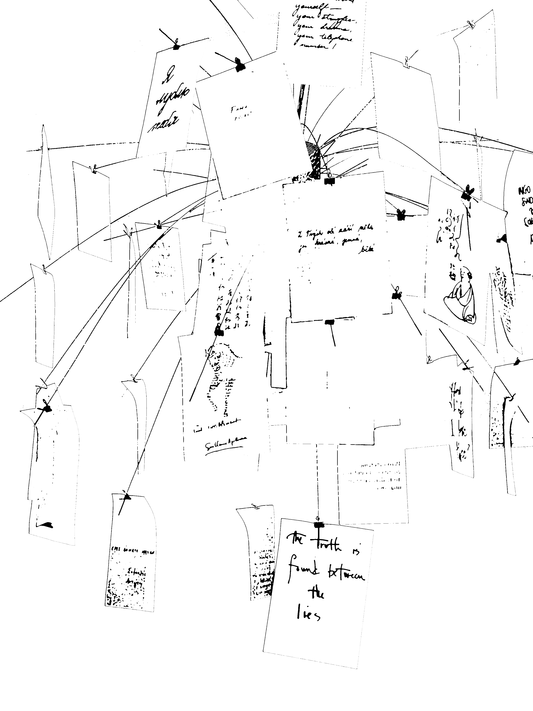
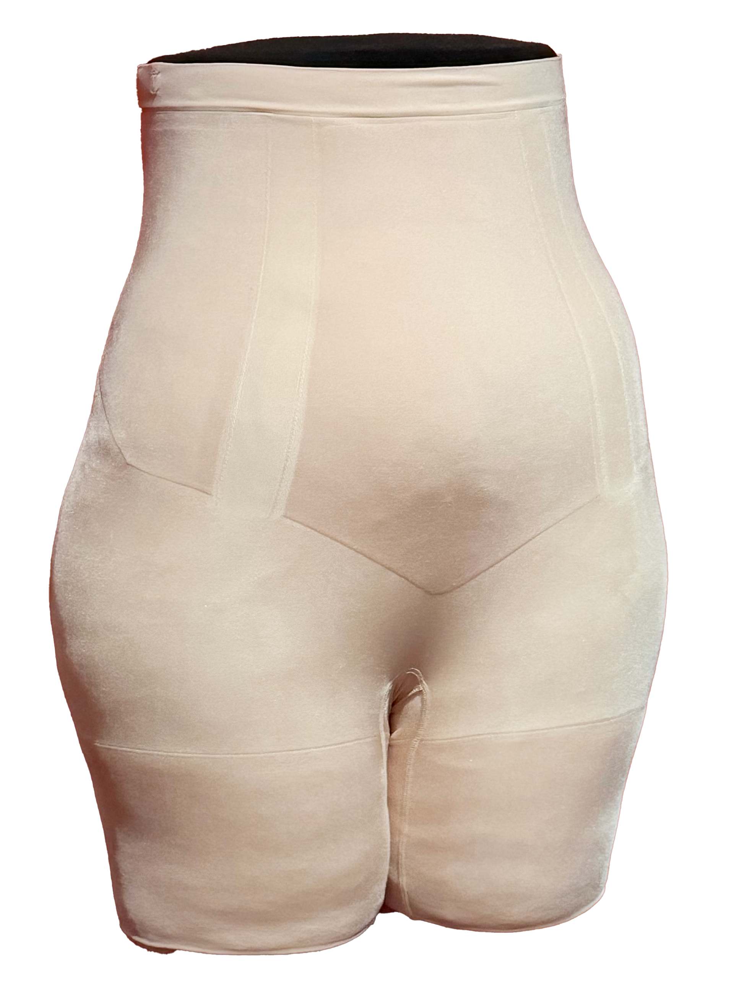
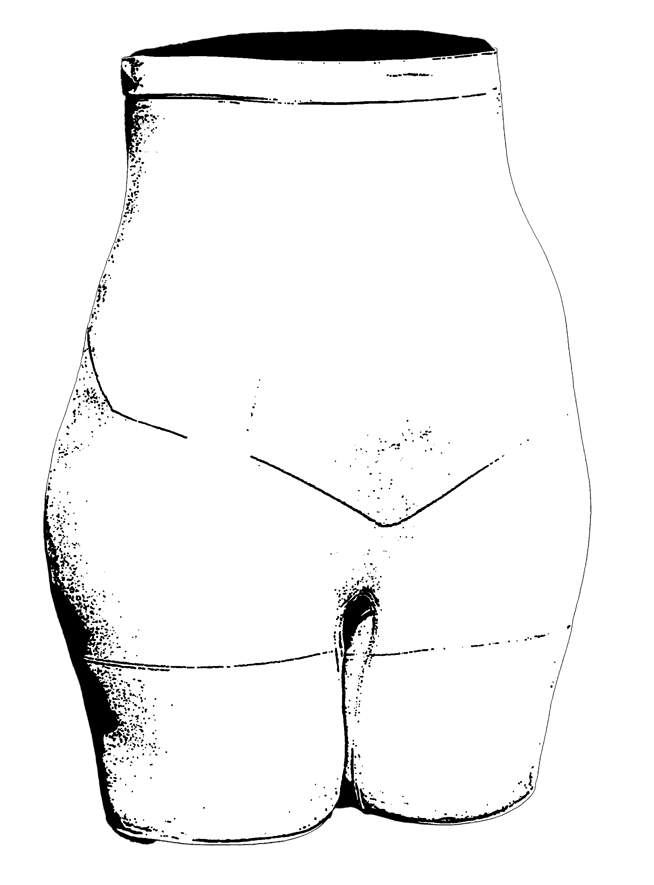
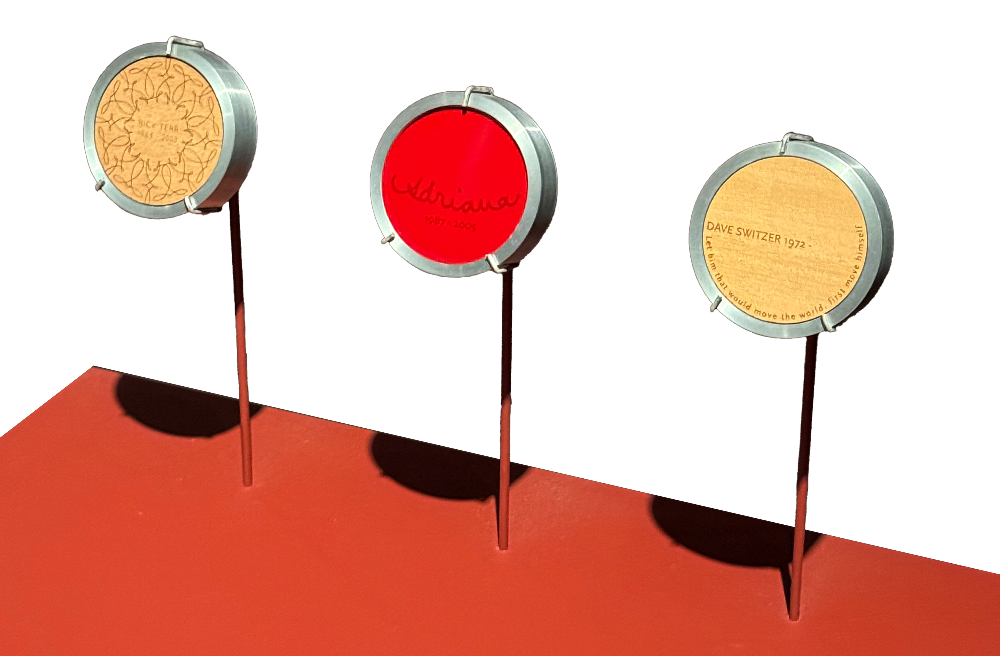
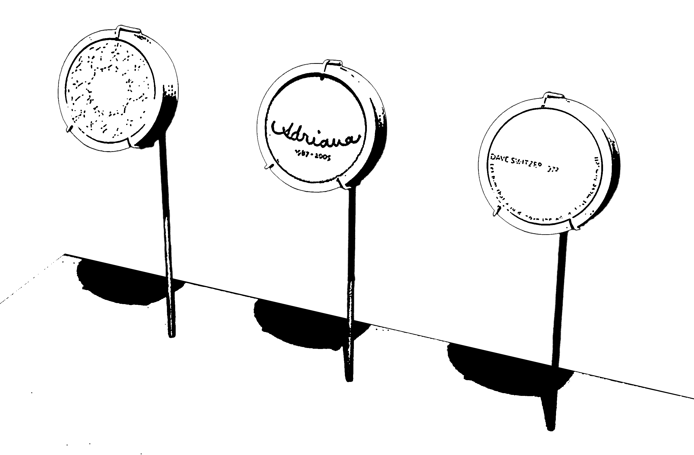

THE MONOBLOC CHAIR,
unidentified designer
This chair takes me right back to Vietnam—plastic tables, night markets, aunties yelling, life happening.
It’s ordinary in the best way.


ZETTEL'Z HANGING LAMP,
Ingro Maurer
Sure, it’s interesting to look at.
But “turning point in design”? That feels like a stretch.


“ONCORE" HIGH-WAISTED MID-THIGH SHORT,
Spanx
Ah, the beginning of body dysmorphia.
Obviously I should contour my organs to be more “visually appealing.”


DIGITAL REMAINS (PROTOTYPES),
Michele Gauler
Who owns a memory once the person is gone — the people grieving, or the person who lived it?
And why does this device assume that everything we leave behind is meant to be seen?

